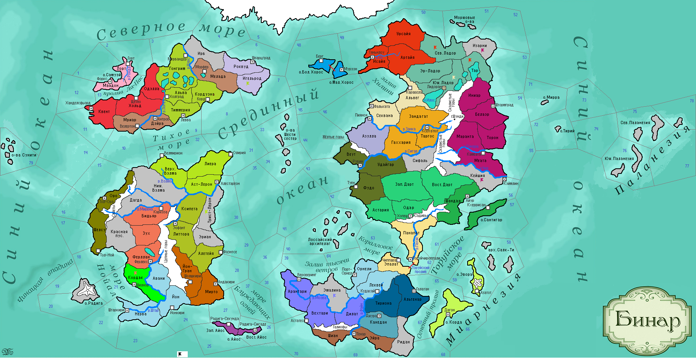

<==
| 8 |
| 9 |
| 10 |
| 11 |
| 12 |
| 13 |
| 14 |
| 15 |
| 16 |
==>
Базилика всех Святых
Новые религии стремятся вытеснить языческие верования и нередко сталкиваются друг с другом. Примирить разные учения призвано специальное культовое сооружение - Базилика всех Святых. [вводится уникальная постройка Базилика, может быть построена в городе страны, в которой присутствуют как минимум локации с 2-мя разными религиями. Даёт +0,5 о/пр в ход, +3 о/в, нет штрафа к РВ от иных религий. Стоимость стр-ва: 100д]

15-й ход истории мира Бинар (1170 г.)
· Князь Ладориана Кель I умирает, передав правление сыну Роуэну.
· Церковь Асатры утверждает догмат прозелитизма, что снизит трудоемкость обращения новых земель в данную веру.
· Леквейцы прославляются на весь материк, как бесшабашные конокрады.
· Война Фриулеса и Феллерда против Форзерда завершается разделом последнего между победителями. Войска Фриулеса в Мриаре изгоняют непрошенных гостей из-за моря.
· Лига Мортис в составе Дюрандаля и Бьянфанга объявляет войну язычникам Ладориана, в помощь к которым приходят их союзники – царство Белаэр. Мортианцы Дюрандаля в шлемах из черепов вторгаются в Юж.Ладор и без сопротивления берут контроль над провинцией и столицей Ладориана.
· Занкийцы Ксеп Ха Хоца узаконивают разбой, как источник получения населением дохода в период между посевными работами. Занкийцы совершают набег на провинцию Азулла.
· Варвары с побережья вторгаются в эомерскую провинцию Литтора! Эотан I Мудрый принимает титул «герцог». Войска герцога разбивают врага и в столичной провинции, и в Алетейи. На радости от побед, в Эомере учреждается орден Золотого сердца.
· Герцог Скандии Хальдруп I завещает трон Утэру II. Утэр нарушает завет отца «на веки оставаться верным языческим Богам» и крестится по асатрианскому обряду. А еще новый герцог оставил свое имя в истории тем, что построил в городах страны канализации, чем заслужил к своему имени приставку «Золотарь».
· Княгиня Ульнара Сина ушла к праотцам…На смену ей пришла дочь Ягдра.
· В провинции Маранта возводится Храм Синариал, украшенный рукописными ликами Бога. Ледяная пещера в Изарни так привлекла к себе внимание царя-под-горой Свидара I, что он послал туда свою экспедицию и договорился о передаче контроля над колонизацией территории синарам.
· Атуанское духовенство разрабатывает догматику церковного аквилианского права.
· Армия Астерлии, ведомая Геларом Элирисией, переправляется через р.Вэлма и одерживает тяжелую победу над ополчением Трист-Лерона. Пораженный отвагой соседей, герцог Эомера Эотан I Мудрый награждает астерлийского полководца орденом Золотого сердца..
· Бьянфангская армия во главе с князем Идаром I Полярным лисом захватывает беззащитные Сев.Ладор и Тар.
· Фридо I – новый герцог Моэдаса.
· Основаны новые города: Велмирион (Астерлия)